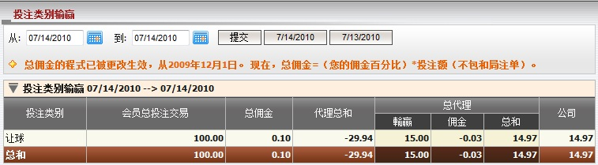

投注类别输赢
定义:
这份报告显示在一段时间内会员总投注额, 总佣金, 总代理输赢, 及根据公司在每场投注中总代理的输赢必须支付予或从上线处接收到的数额。

图 1.1
用词注解:
- 会员投注额: 会员根据投注类别的总投注额。
- 总佣金: 根据投注类别, 总代理从上线出可能得到的最高佣金数额。
- 代理总和: 根据投注类别, 总代理收到或支付予代理的数额。
- 总代理输赢: 根据投注类别, 总代理基于占成数的输赢数额。
- 总代理佣金: 扣除代理佣金后, 总代理从上线出收到的佣金数额。
- 总代理总和: 总代理包括佣金的总输赢输额。
- 公司: 总代理需支付予或从上线处接收到的总数额。
如何理解报告:
从上图中, 我们可以告诉大家会员投注100于让球盘的投注类别, 总代理共赢得15, 可得到 29.94 支付上线: 29.94 - 14.97= 14.97.